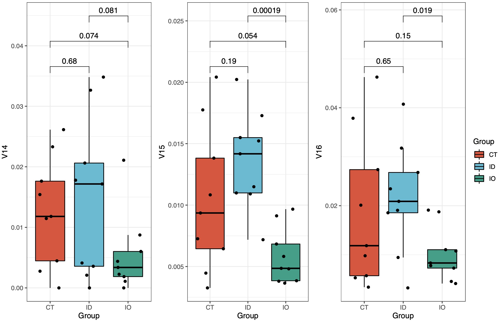
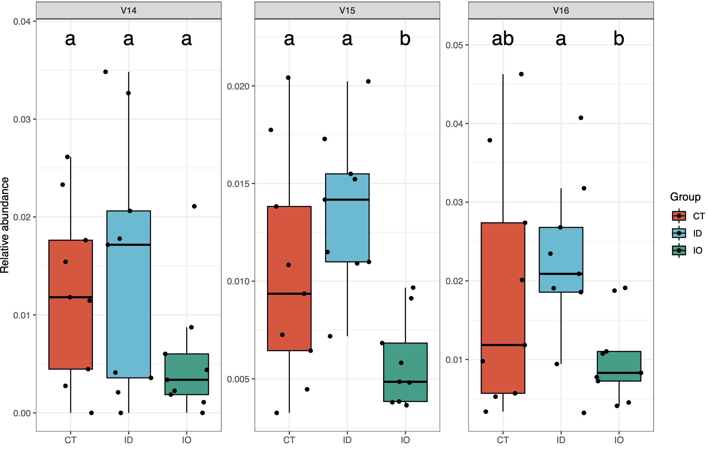
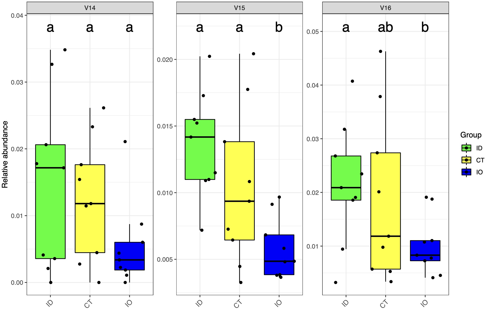

11. 微生物差异箱型图
微生物物种差异箱型图
11.1 tax_plot模块
tax_plot模块是可以根据4.1的data_filter函数筛选出各个级别的核心微生物并进行差异性分析可视化。
11.1.1 参数介绍
data：由
data_filter函数产生的包含分组机各个样本微生物的数据框。tax_select指定需要进行差异性分析的物种。
method指定差异分析的检验方法，包含T检验、onewayANOVA的多重检验(HSD, LSD,duncan,scheffe,REGW,SNK)。
width_total指定全部物种汇总拼图的宽度
height_total指定全部物种汇总拼图的高度
width指定单独物种图形的宽度
height指定单独物种图形的高度
seed指定随机数种子，便于确定图形中散点的随机分布。【默认：123】
group_level指定图形中分组显示的排列顺序。
mytheme支持ggplot2主题代码，便于图形美化。
palette指定绘图色板。
11.1.2 使用范例
代码示例：
# 首先利用过滤核心模块读取原始数据
library(EasyMicroPlot) # 加载包
core_data <- data_filter(dir = '16s_data/',design = 'mapping/mapping.txt',
min_relative = 0.001,min_ratio = 0.7)
# 选择出自己需要的微生物级别数据
sp <- core_data$filter_data$species
# 利用函数进行计算，这里选择V14,V15,V15用于示例
tax_re <- tax_plot(data = sp,tax_select = c('V14','V15','V16'),
method = 'LSD',width = 5,height = 5)
tax_re$pic # 这里存储了基本图形结果
tax_re$html # 这里存储交互式图形结果
tax_re$Post_Hoc # 当method选择onewayANOVA的多重检验时，这里存储了事后检验的详细结果
基本计算结果：
# 详细的时候多重事后检验结果
tax_re$Post_Hoc
$V14
difference pvalue signif. LCL UCL
CT - ID -0.002209020 0.6419 -0.0118903818 0.007472342
CT - IO 0.007127541 0.1417 -0.0025538212 0.016808903
ID - IO 0.009336561 0.0581 . -0.0003448013 0.019017922
$V15
difference pvalue signif. LCL UCL
CT - ID -0.003261756 0.1208 -0.0074471973 0.0009236855
CT - IO 0.004577676 0.0334 * 0.0003922346 0.0087631173
ID - IO 0.007839432 0.0007 *** 0.0036539905 0.0120248732
$V16
difference pvalue signif. LCL UCL
CT - ID -0.002920911 0.5940 -0.0140806819 0.00823886
CT - IO 0.008443461 0.1315 -0.0027163101 0.01960323
ID - IO 0.011364372 0.0463 * 0.0002046009 0.02252414
图形结果展示：
# T检验结果
tax_re <- tax_plot(data = sp,tax_select = c('V14','V15','V16','V17'),method = 'ttest')
tax_re$pic$total

# onewayANOVA的多重检验
tax_re <- tax_plot(data = sp,tax_select = c('V14','V15','V16'),method = 'LSD')
tax_re$pic$total

# 结果也支持输出交互式图形，便于发现离群样本等情况
tax_re$html$total
Tips 1：可以将鼠标放在感兴趣的点，查询样本信息及基本情况。
# tax_plot支持ggplot2主题语法，可以使用mytheme参数进行进一步美化
library(ggplot2)
newtheme_slope=theme(axis.text.x =element_text(angle = 45, hjust = 1,size = 10)) # 例如调整分组名称的角度
group_order <- c('ID','CT','IO') ## 设定排序，名称需要绝对一致
cols <- c('green','yellow','blue') ## 设定颜色方案
tax_re <- tax_plot(data = sp,tax_select = c('V14','V15','V16'),method = 'LSD',
mytheme = newtheme_slope)
tax_re$pic$total
